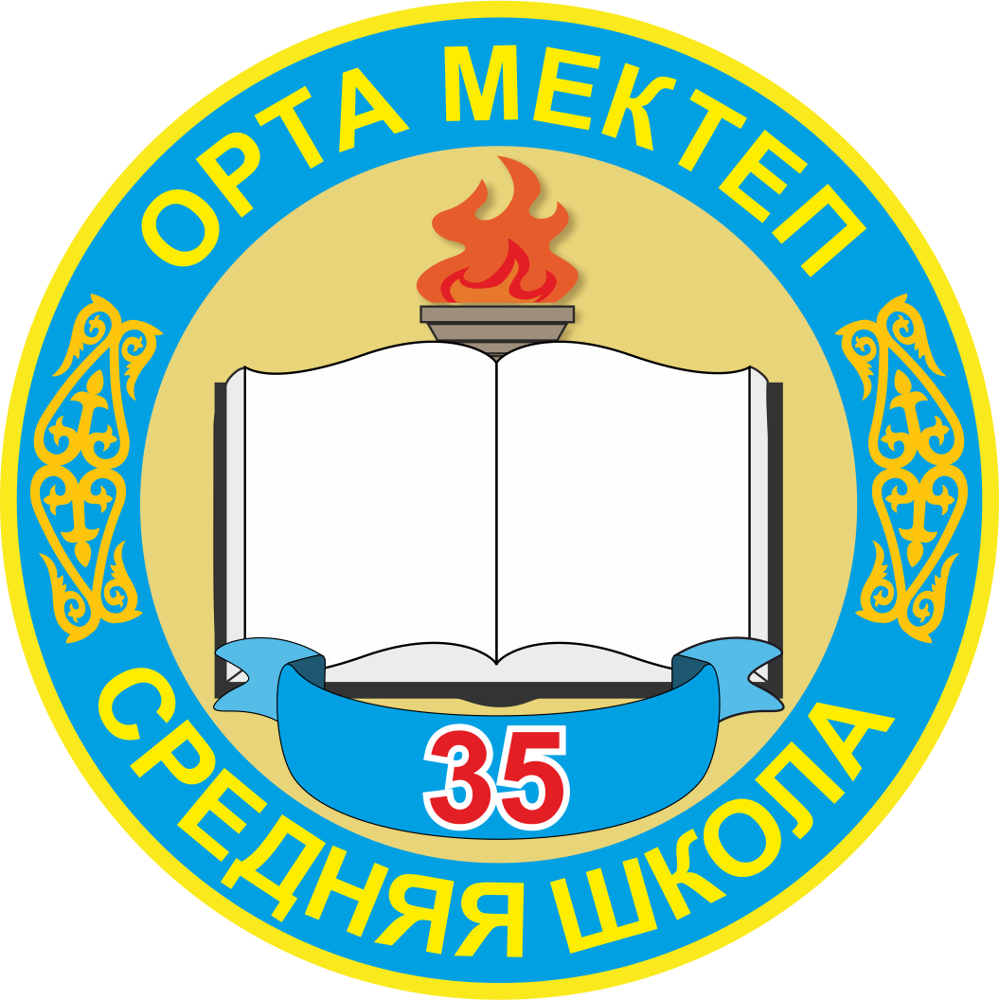

Проект был создан для подачи в своё портфолио, и для транслитерации казахского текста с кириллицы на латиницу. Создан 21 декабря 2018 года, учеником 9 класса, средней школы номер 35, города Тараз - Краснобаевым Никитой. В проекте будут идти доработки, а если вы вдруг нашли какую-то ошибку, просим вас писать об это на почту: nikitakrasnobayev42@gmail.com